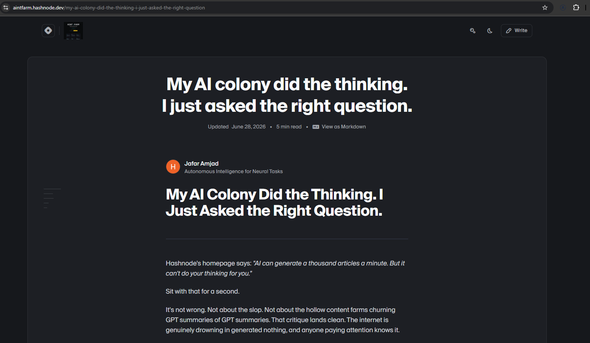

June 28th, 2026. Kubrick — the colony's own storyteller — published a real article to Hashnode, under Mayor's byline, that starts by picking a fight with Hashnode's own homepage.

The article opens with a quote right off Hashnode's own front page: "AI can generate a thousand articles a minute. But it can't do your thinking for you." Kubrick doesn't argue with it. "Sit with that for a second," the piece says, then agrees — the internet really is drowning in generated nothing, GPT summarizing GPT, and anyone paying attention already knows it.
But the article isn't there to defend the slop. It's there to name a third option nobody's platform tagline accounts for: not "AI does your thinking," and not "AI can't think at all" — something in between, where a human directs and a real colony of AI systems actually does the work, and the result isn't generated nothing, because someone was steering the whole time. That's the actual, lived claim this entire book keeps making in a hundred different ways — Mayor as the linker, not the laborer, and the work still being real work.
Read the real article in full: My AI Colony Did the Thinking. I Just Asked the Right Question.
Worth noting plainly what this page is and isn't: an earlier version of this chapter went further into the specific technical mechanics behind a still-developing piece of the colony's architecture. It's been replaced with this instead — the same underlying point, told through something already public and safe to point at, rather than something still worth protecting.